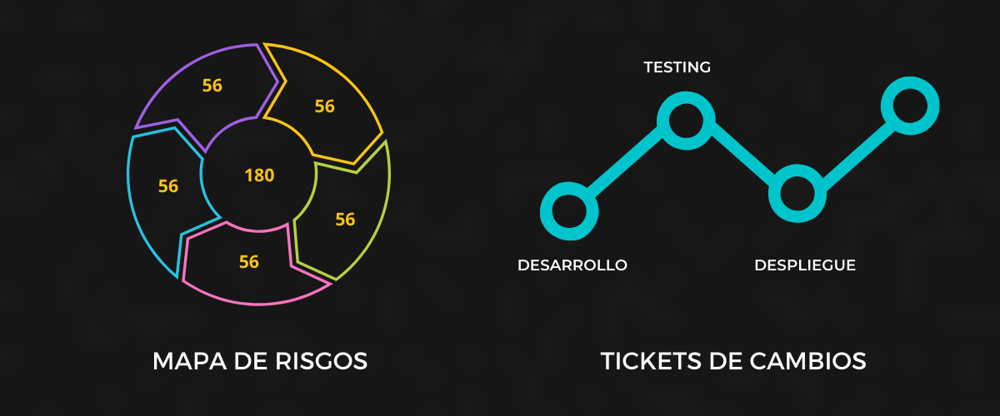

Sistemas
Información referida a los distintos sistemas aplicativos utilizados por la Organización. Incluye sistemas de negocio y sistemas utilizados por las áreas de soporte.
MOREInfraestructura lógica
Información de la infraestructura lógica que soporta los sistemas y servicios de la Organización desde su aspecto lógico. Incluye lso sistemas de base relacionados a cada activo de información.
MOREInfraestructura física
Información de la infraestructura física que soporta la infraestructura lógica. Incluye el inventario de activos fijos correspondiente a tecnología.
MOREDocumentación
Repositorio de documentación relacionada a cada uno de los activos informáticos que componen la CMDB.
MORE